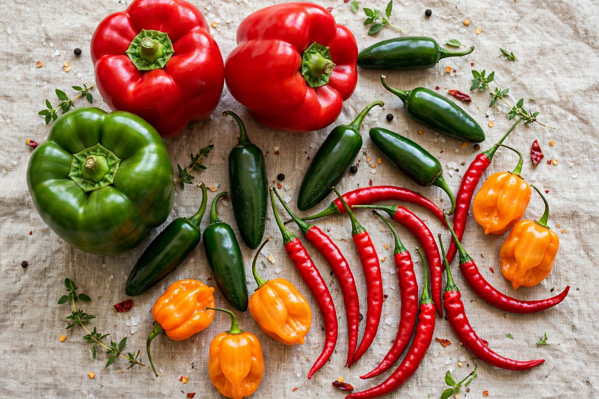

Capsicum

Family: Solanaceae
Origin: Americas
Key compound: Capsaicin
Capsicum is a genus of flowering plants in the nightshade family Solanaceae, native to the Americas. Its species are cultivated worldwide for their fruits, called peppers or chillies, which range from the mild bell pepper to extremely hot chillies. After the Columbian exchange, capsicums spread rapidly through the spice trade and transformed cuisines in Europe, Africa and Asia.
Species and varieties
Five domesticated species are recognised: C. annuum (bell peppers, jalapeños, cayenne), C. frutescens (tabasco, piri piri), C. chinense (habanero and the hottest "superhot" cultivars), C. baccatum (South American ajíes) and C. pubescens (rocoto). Hundreds of cultivars differ in shape, colour, flavour and heat.
Heat
The pungency of capsicums comes from capsaicin and related capsaicinoids, concentrated in the placental tissue of the fruit, and is measured in Scoville Heat Units: a bell pepper rates 0, a jalapeño a few thousand, a habanero hundreds of thousands, and the hottest bred cultivars — such as Carolina Reaper and Pepper X — exceed 1.6–2.6 million SHU, approaching pure capsaicin at 16 million. Capsaicin activates the TRPV1 heat receptor and is also used in topical analgesics and pepper spray.
Uses
Peppers are eaten fresh, dried, smoked (chipotle), ground into paprika, chilli powder and cayenne, and fermented into hot sauces. They are rich in vitamin C — a fact exploited historically against scurvy — and in carotenoid pigments such as capsanthin.